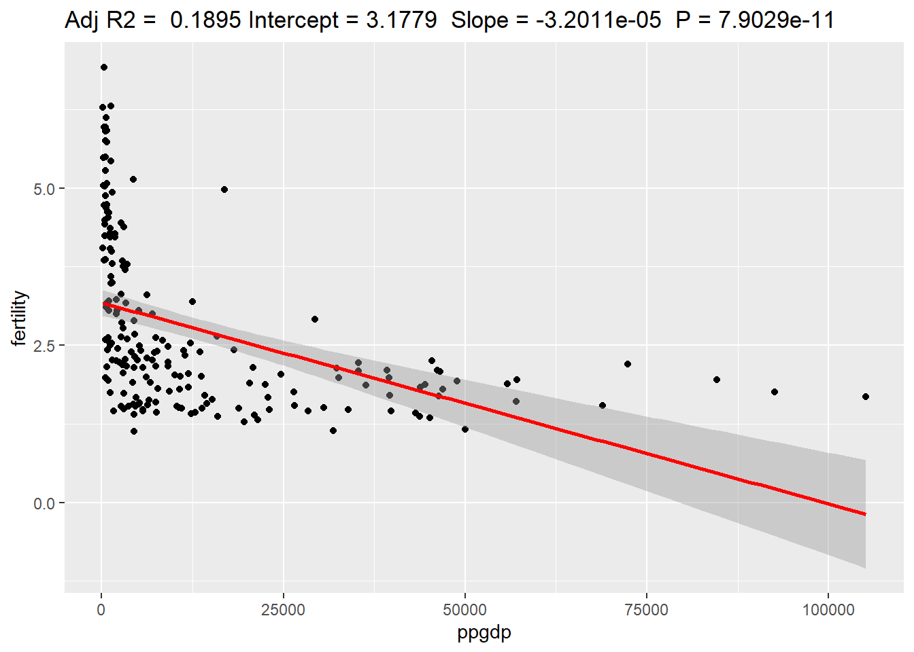
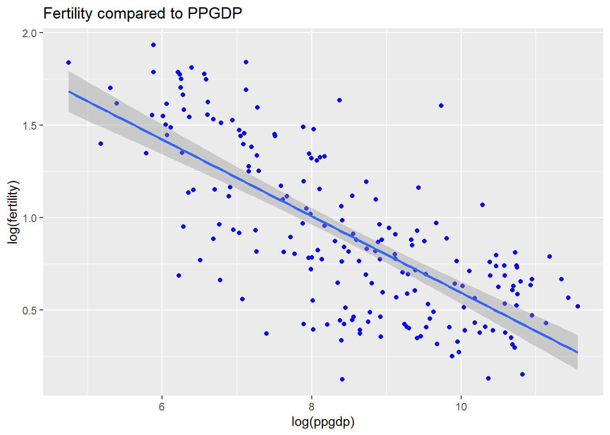
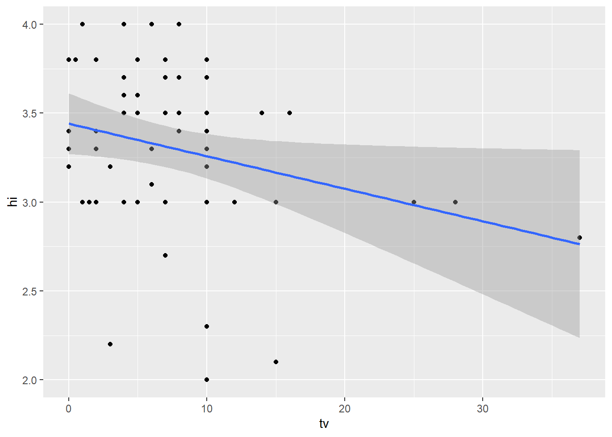

United Nations (Data file: UN11in alr4) The data in the file UN11 contains several variables, including ppgdp, the gross national product per person in U.S. dollars, and fertility, the birth rate per 1000 females, both from the year 2009. The data are for 199 localities, mostly UN member countries, but also other areas such as Hong Kong that are not independent countries. The data were collected from the United Nations (2011). We will study the dependence of fertility on ppgdp.
1.1.1.
Identify the predictor and the response.
The predictor
ppgdp
The response
Fertitlity
The reason they are set up this way is because we are studying how ppgdp effects fertitlity this makes fertility dependent on ppgpd.
Reading in the data
library(alr4)
Loading required package: car
Loading required package: carData
Loading required package: effects
lattice theme set by effectsTheme()
See ?effectsTheme for details.
library(smss)library(ggplot2)# reading datadata("UN11")# taking a quick look at datahead(UN11)
region group fertility ppgdp lifeExpF pctUrban
Afghanistan Asia other 5.968 499.0 49.49 23
Albania Europe other 1.525 3677.2 80.40 53
Algeria Africa africa 2.142 4473.0 75.00 67
Angola Africa africa 5.135 4321.9 53.17 59
Anguilla Caribbean other 2.000 13750.1 81.10 100
Argentina Latin Amer other 2.172 9162.1 79.89 93
1.1.2
Draw the scatterplot of fertility on the vertical axis versus ppgdp on the horizontal axis and summarize the information in this graph. Does a straight-line mean function seem to be plausible for a summary of this graph?
# pulling the two variables that are neededUN <- UN11 %>%select(c(ppgdp, fertility))head(UN)
# Creating the graph comparing the two variablesggplot(data = UN, aes(x = ppgdp, y = fertility)) +geom_point(color ='blue') +labs(title ="Fertility compared to PPGDP")
# function for ggplot regression plottingggplotRegression <-function (fit) {require(ggplot2)ggplot(fit$model, aes_string(x =names(fit$model)[2], y =names(fit$model)[1])) +geom_point() +stat_smooth(method ="lm", col ="red") +labs(title =paste("Adj R2 = ",signif(summary(fit)$adj.r.squared, 5),"Intercept =",signif(fit$coef[[1]],5 )," Slope =",signif(fit$coef[[2]], 5)," P =",signif(summary(fit)$coef[2,4], 5)))}# regression with a log A <-lm(fertility ~ ppgdp, data = UN)summary(A)
Call:
lm(formula = fertility ~ ppgdp, data = UN)
Residuals:
Min 1Q Median 3Q Max
-1.9006 -0.8801 -0.3547 0.6749 3.7585
Coefficients:
Estimate Std. Error t value Pr(>|t|)
(Intercept) 3.178e+00 1.048e-01 30.331 < 2e-16 ***
ppgdp -3.201e-05 4.655e-06 -6.877 7.9e-11 ***
---
Signif. codes: 0 '***' 0.001 '**' 0.01 '*' 0.05 '.' 0.1 ' ' 1
Residual standard error: 1.206 on 197 degrees of freedom
Multiple R-squared: 0.1936, Adjusted R-squared: 0.1895
F-statistic: 47.29 on 1 and 197 DF, p-value: 7.903e-11
# Here we can see why we would need to make adjustments as you can not go below 0 fertilityggplotRegression(lm(fertility ~ ppgdp, data = UN))
`geom_smooth()` using formula 'y ~ x'

Solution
Based on the points on this graph it does not appear to be linear and there appears to be bend within this information. To determine if we could use that function it would be best to run a log function on the x and y axis. Looking at the regression plotted above we can see that the relationship shows a decrease as ppgdp grows however, it reaches a point where it goes negative in fertility which is impossible. This is why I would recommend using a log function.
1.1.3
Draw the scatterplot of log(fertility) versus log(ppgdp) using natural logarithms. Does the simple linear regression model seem plausible for a summary of this graph? If you use a different base of logarithms, the shape of the graph won’t change, but the values on the axes will change.
# Creating the graph comparing the two variablesggplot(data = UN, aes(x =log(ppgdp), y =log(fertility))) +geom_point(color ='blue') +geom_smooth(method = lm) +labs(title ="Fertility compared to PPGDP")
`geom_smooth()` using formula 'y ~ x'

Solution
Here we use the log on both of the variables and we notice that it allows us to utilize the regression correctly. Now we can show the relationship between these two variables and the line is linear.
Question 2
Annual income, in dollars, is an explanatory variable in a regression analysis. For a British version of the report on the analysis, all responses are converted to British pounds sterling (1 pound equals about 1.33 dollars, as of 2016).
(a)
How, if at all, does the slope of the prediction equation change?
Yes, the slope will change by 1.33 since this is rate at which it is changing and the conversion between the two values. The US version will increase by 1.33 times compared to the British version.
(b)
How, if at all, does the correlation change?
The correlation should not change as the scale changes in relation to the amount.
Question 3
Water runoff in the Sierras (Data file: water in alr4) Can Southern California’s water supply in future years be predicted from past data? One factor affecting water availability is stream runoff. If runoff could be predicted, engineers, planners, and policy makers could do their jobs more efficiently. The data file contains 43 years’ worth of precipitation measurements taken at six sites in the Sierra Nevada mountains (labeled APMAM, APSAB, APSLAKE, OPBPC, OPRC, and OPSLAKE) and stream runoff volume at a site near Bishop, California, labeled BSAAM. Draw the scatterplot matrix for these data and summarize the information available from these plots. (Hint: Use the pairs() function.)
Here we see that there are two variables that have a statistically significant relationship with BSAAM. These are OPRC and OPSLAKE each less than .05 however, questions regarding multicollinarity arise with this strong corrleation. The other variables such as the AP variables seem to also be correlated however, it does not appear as strongly as the two before. When looking at the range of residuals we notice a very large difference and this indicates that there may be some large and small outliers. This will effect the bests fitted line and lead to less robust analysis. When we are looking at the R^2 we notice it is very high which means it is fairly well fitted as it is close to 1.00.
Question 4
Professor ratings (Data file: Rateprof in alr4) In the website and online forum RateMyProfessors.com, students rate and comment on their instructors. Launched in 1999, the site includes millions of ratings on thousands of instructors. The data file includes the summaries of the ratings of 364 instructors at a large campus in the Midwest (Bleske-Rechek and Fritsch, 2011). Each instructor included in the data had at least 10 ratings over a several year period. Students provided ratings of 1–5 on quality, helpfulness, clarity, easiness of instructor’s courses, and raterInterest in the subject matter covered in the instructor’s courses. The data file provides the averages of these five ratings. Create a scatterplot matrix of these five variables. Provide a brief description of the relationships between the five ratings.
data(Rateprof)head(Rateprof)
gender numYears numRaters numCourses pepper discipline dept
1 male 7 11 5 no Hum English
2 male 6 11 5 no Hum Religious Studies
3 male 10 43 2 no Hum Art
4 male 11 24 5 no Hum English
5 male 11 19 7 no Hum Spanish
6 male 10 15 9 no Hum Spanish
quality helpfulness clarity easiness raterInterest sdQuality sdHelpfulness
1 4.636364 4.636364 4.636364 4.818182 3.545455 0.5518564 0.6741999
2 4.318182 4.545455 4.090909 4.363636 4.000000 0.9020179 0.9341987
3 4.790698 4.720930 4.860465 4.604651 3.432432 0.4529343 0.6663898
4 4.250000 4.458333 4.041667 2.791667 3.181818 0.9325048 0.9315329
5 4.684211 4.684211 4.684211 4.473684 4.214286 0.6500112 0.8200699
6 4.233333 4.266667 4.200000 4.533333 3.916667 0.8632717 1.0327956
sdClarity sdEasiness sdRaterInterest
1 0.5045250 0.4045199 1.1281521
2 0.9438798 0.5045250 1.0744356
3 0.4129681 0.5407021 1.2369438
4 0.9990938 0.5882300 1.3322506
5 0.5823927 0.6117753 0.9749613
6 0.7745967 0.6399405 0.6685579
Here we see a vary of different strengths of correlations these will be discussed one by one. These range from very weak correlation to very strong correlation which is interesting to see. These are all linear and positive.
Quality ~ Helpfulness - Here we notice a strong correlation as the data is very linear. This data is also showing a very strong correlation in a positive direction.
Quality ~ Clarity- Here we notice a strong correlation that is positive and linear.
Quality ~ Easiness- Here we notice a weaker correlation compared to the last too but still a positive linear correlation.
Quality ~ RaterInterest- Here we notice a weak correlation but still a positive linear correlation.
Easiness ~ RaterInterst - Shows a very flat line which shows a very weak correlation.
Clarity ~ Easiness- Shows a weak linear correlation.
Question 5
For the student.survey data file in the smss package, conduct regression analyses relating (by convention, y denotes the outcome variable, x denotes the explanatory variable) (i) y = political ideology and x = religiosity, (ii) y = high school GPA and x = hours of TV watching.
(You can use ?student.survey in the R console, after loading the package, to see what each variable means.)
data(student.survey)SS <- student.surveyhead(SS)
subj ge ag hi co dh dr tv sp ne ah ve pa pi re
1 1 m 32 2.2 3.5 0 5.0 3 5 0 0 FALSE r conservative most weeks
2 2 f 23 2.1 3.5 1200 0.3 15 7 5 6 FALSE d liberal occasionally
3 3 f 27 3.3 3.0 1300 1.5 0 4 3 0 FALSE d liberal most weeks
4 4 f 35 3.5 3.2 1500 8.0 5 5 6 3 FALSE i moderate occasionally
5 5 m 23 3.1 3.5 1600 10.0 6 6 3 0 FALSE i very liberal never
6 6 m 39 3.5 3.5 350 3.0 4 5 7 0 FALSE d liberal occasionally
ab aa ld
1 FALSE FALSE FALSE
2 FALSE FALSE NA
3 FALSE FALSE NA
4 FALSE FALSE FALSE
5 FALSE FALSE FALSE
6 FALSE FALSE NA
# getting the data that we will be working with and checking to see which each variable means#?student.surveySS <- SS %>%select(hi, tv, pi, re)
(a) Graphically portray how the explanatory variable relates to the outcome variable in each of the two cases
# plotting the comparison between political ideology and religiositySS_plot <-plot(pi~re, data = SS)
# plotting the comparison between high school gpa and hours of tv watchingggplot(data = SS, aes(x = tv, y = hi)) +geom_point() +geom_smooth(method = lm)
`geom_smooth()` using formula 'y ~ x'

# making a table comparing these variabelsxtabs(~pi+re, SS)
re
pi never occasionally most weeks every week
very liberal 3 5 0 0
liberal 8 14 1 1
slightly liberal 2 1 1 2
moderate 1 8 1 0
slightly conservative 1 1 2 2
conservative 0 0 2 2
very conservative 0 0 0 2
summary(SS)
hi tv pi re
Min. :2.000 Min. : 0.000 very liberal : 8 never :15
1st Qu.:3.000 1st Qu.: 3.000 liberal :24 occasionally:29
Median :3.350 Median : 6.000 slightly liberal : 6 most weeks : 7
Mean :3.308 Mean : 7.267 moderate :10 every week : 9
3rd Qu.:3.625 3rd Qu.:10.000 slightly conservative: 6
Max. :4.000 Max. :37.000 conservative : 4
very conservative : 2
(b)
Summarize and interpret results of inferential analyses.
Here we notice that the more conservative you are the more likely you are to visit religious service on more occasions. However, this is not a very significant trend and it is hard to say with the graph alone. When looking into the xtabs comparing these two results we notice a similar shift there tends to be a higher number of liberals in the never and occasionally sections and then as it gets into most weeks and every week that number drops off quickly and slowly increases on the conservative side.
We are also notice a very clear correlation with the hours of watching tv and the highschool gpa. Here we notice that the more hours spent watching tv the less likelu you are to have a higher gpa. There is a negative slope as it drops off between the 10-15 hour mark.